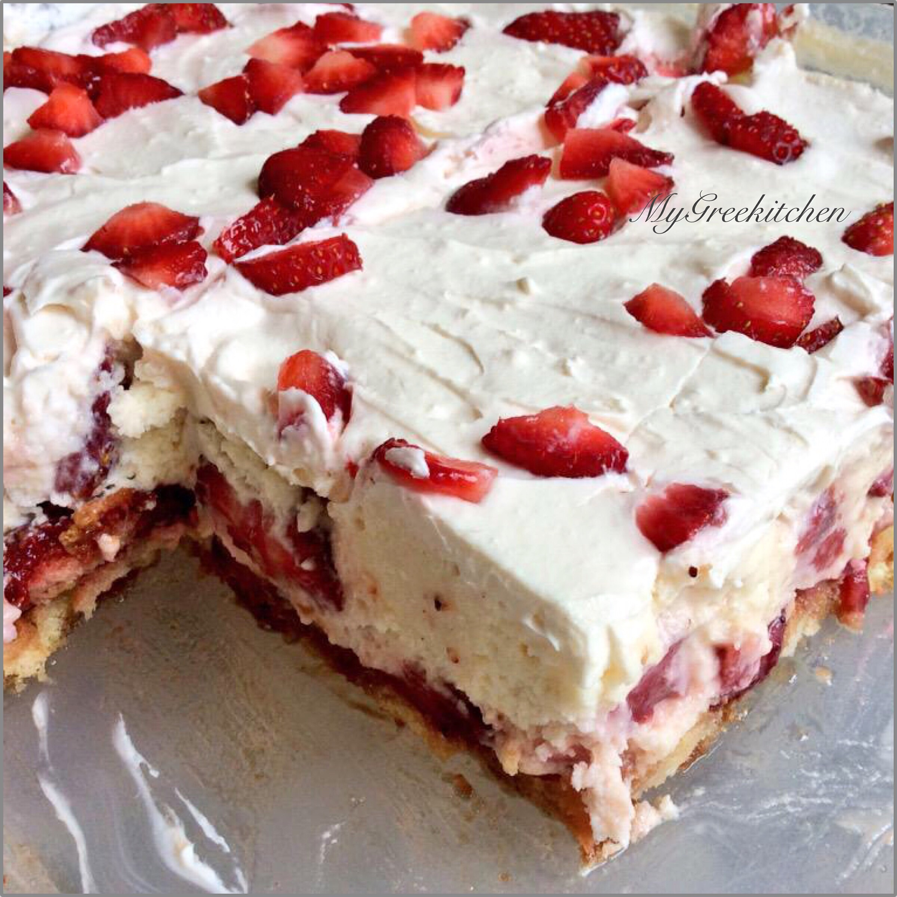

No Bake Strawberry Shortcake
Photo and recipe is taken from Foodista
Description
This is definitely the best strawberry shortcake I have ever had, featuring buttery cake with a slight amount of crisp, layered with whipped cream and strawberries. This is definitely my go-to recipe for any family occasion or event.
Ingredients
|
- 1 box of vanilla instant pudding - 1/2 cup strawberry juice - 1 1/2 cups nonfat milk - 1 tsp vanilla extract - 24 Savoiardi (Lady Fingers) - 220g (almost 1 cup) chilled whipped cream - 1 pound fresh strawberries, hulled, sliced, and patted dry |
Preparation
- In a bowl whisk pudding, milk and vanilla and set aside.
- Whip the cream until it holds stiff peaks (add sugar if desired).
- Dip ladyfingers briefly in strawberry juice and arrange them in the bottom of a dish.
- Spread half the pudding mixture over the ladyfingers.
- Place the strawberries in a single layer over the pudding.
- Repeat with remaining ladyfingers, pudding mixture and strawberries.
- Top with whipped cream and strawberries.
- Chill for at least 4 hours before serving.